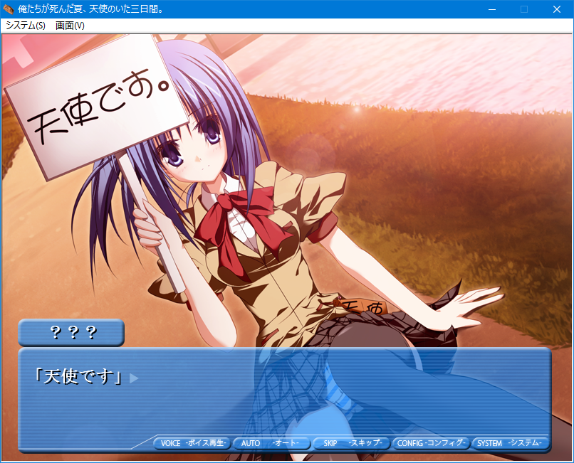
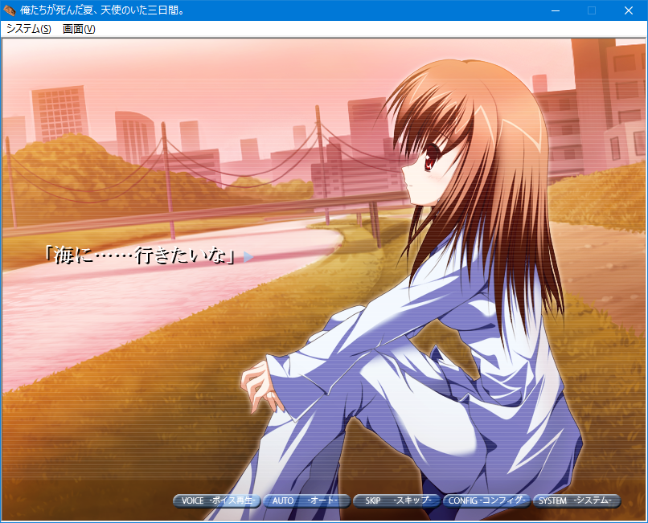

Ore-tachi ga Shinda Natsu, Tenshi no Ita Mikkakan - 俺たちが死んだ夏、天使のいた三日間
Developer: Check&Stripe
In my never ending search for more セカイ系 I found this short doujin game I quite liked. The story follows Yousuke, a guy that has gone through some tragic shit in his life which lead him into having a sad and negative attitude towards everything. Basically your typical edgy protagonist. One day he crosses way with a girl who calls herself a Tenshi and tells him the world is ending in three days. He doesn’t really believe but more wishes it was true.
After that encounter, Yousuke meets with Natsumi, a strange but cheerful girl in pajamas. Yousuke tells her the same thing that the Tenshi told him, there’s only 3 days left, so Natsumi even though she doesn’t seem startled she says se wants to go see the sea. That’s how Yousuke starts this short journey that will show him a different side of life from what he’s experienced until now.

My most pleasant surprise with this eroge is that the writing is really fucking good, it could easily pass for a comercial game, despite being pretty short (it took me 5h) it manages to get both Yousuke’s and Natsumi’s psyche down fairly well, and also to show Yusuke’s progression into discovering happiness in life and a reason to keep living day after day in this world to sound fairly compelling. It has some really good passages here and there


The overall atmosphere and attitude of protagonist kinda have an aura to AIR, although the plot here is much of a lower scale and stays more grounded, I never really thought AIR had that セカイ系 feeling to it, at least in the same vein that Eva or Iriya does but it’s true that it still is one of the most Influential games and it’s cool to see doujin games with a similar tone.
To wrap it up I’d say that if it sounds interesting pick it up, it’s cheap and short, I doubt it will change your view like it did with Yousuke but should give you a fun few hours.
